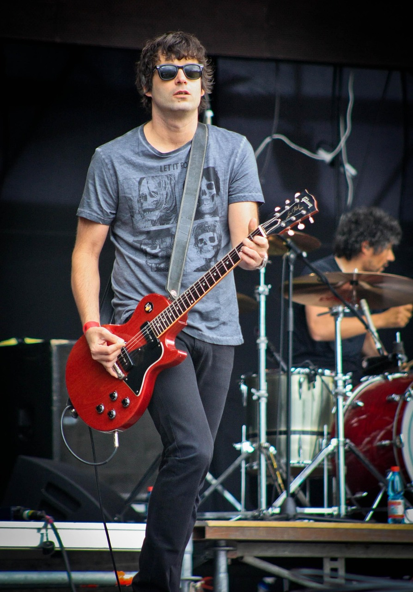

Music Band
Donde el talento se vuelve proyecto.
La sección "Music Band" de la metodología de Sprinkloud surge como una respuesta estratégica a una problemática recurrente en la enseñanza musical tradicional. Tras un análisis de más de ocho años de experiencia docente, se identificó una tasa de retención estudiantil significativamente baja (con una permanencia promedio de cuatro meses), atribuida principalmente a la falta de conexión emocional, pertenencia comunitaria y relevancia cultural del repertorio estudiado.

Agrupación Estratégica
Se facilita la formación de bandas, emparejando a los estudiantes con compañeros de intereses y estilos musicales afines.
Práctica Colaborativa
Estas agrupaciones realizan sesiones de práctica semanales, complementarias a su formación individual, para fomentar el desarrollo de habilidades interpersonales y la cohesión de grupo.
Creación y Producción
El objetivo es trascender la ejecución individual hacia la creación de proyectos. Las bandas desarrollan su propio repertorio, que incluye tanto covers como material original.
-
Fomento de la Comunidad y Pertenencia
La colaboración regular fortalece los lazos entre los estudiantes, creando un sentido de comunidad que aumenta la motivación y la persistencia en el aprendizaje.
-
Relevancia Cultural y Profesional
Los proyectos de banda permiten a los estudiantes abordar un repertorio que les resulte relevante, mientras construyen un portafolio de trabajo.
-
Exposición y Desarrollo de Carrera
La participación en competiciones internas de Sprinkloud y la publicación de contenido audiovisual en redes sociales ofrecen una plataforma para la visibilidad, permitiendo a los estudiantes iniciar la solidificación de una carrera profesional y la materialización de proyectos musicales en el mundo real.